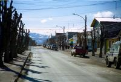
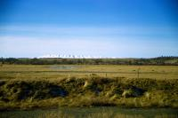
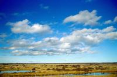
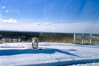
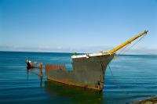

|
Mardi 28 août
Temps magnifique qui fait ressortir le bleu éclatant du lac de Puerto Natales
et le blanc des montagnes derrière. A 15h00, on se traîne péniblement à l'arrêt
de bus. Vive les courbatures et les ampoules à chaque doigt de pied. Heidi et
Lionel, ces pieds tendres, sont les plus touchés, ils souffrent. Vamos a Punta
Arenas, ville qui se dispute avec Ushuaïa le titre de ville la plus australe
(ça veut dire: la plus au sud). Mais en fait, c'est Puerto Williams qui l'est,
comme quoi c'est pas toujours celui qui le dit qui l'est. Reste que Punta Arenas
est la ville la plus australe qui n'est pas sur une île (la terre de feu étant
une île de la taille de l'Irlande).
On descend donc encore plus pour se rapprocher du bout du monde. On traverse
des paysages fabuleux de steppe enneigée s'étendant à perte de vue, quelques
forêts d'arbres penchés dans le sens du vent, des lacs, des troupeaux de vaches,
moutons, chevaux, oies sauvages, des nandous, des guanacos, des flamands roses
au loin (hé oui, sont pas si frileux), des cow-boys à cheval avec leurs chiens
et des estancias en bois au milieu. On dirait qu'il n'y a plus de limites. Les
prés ne sont plus des prés mais d'immenses étendues plates courant à perte de
vue. Les couleurs du ciel sont splendides: bleu ciel pour... le ciel, vert-jaune
pour les prairies recouvertes de bruyère et de moutons qui s'y confondent, blanc
pour la neige (!), bleu roi pour les lacs et, le clou du spectacle le rose pétant
des flamands sur l'eau. Et là haut, loin au-dessus de nos têtes, la lune surveille
tout cela depuis midi.
Grosse ville sympa de 130000 habitants, Punta Arenas est plantée dans le détroit
de magellen, on se demande bien ce que font tous ces gens au bout du monde.
On va chez Nena, petite dame fort gentille qui tient une hospedaje.
Mercredi 29 août
C'est en 1916 qu'a été ouvert le canal de Panama. La conséquence pour le florissant
port de Punta Arenas a été terrible: baisse énorme de l'activité. Les suisses
qui étaient venus pour faire du commerce essentiellement de laine, lait et fromages,
repartent pour la plupart aux quatre coins du monde. Ceux qui sont restés poursuivent
encore ces activités aujourd'hui.
Sur la route de Fuerto Bulnes, au sud de Punta Arenas, on longe le détroit
de magellan en traversant des estancias. La route cède la place à une piste.
Ici, pas d'eau courante, de gaz, d'électricité. On se chauffe au bois et on
utilise l'eau de pluie. L'école étant obligatoire de 5 à 11 ans, les enfants
doivent aller en pension. Un grand-père de 60 ans qui voulait garder son petit-fils
près de lui, a fait tous les matins les 20 km aller-retour pour l'y emmener
en bicyclette. Rebelote le soir pour le chercher. Et ça caille! Et il y a du
vent! Puis on croise un paysan qui allé ramasser du bois avec son attelage de
boeufs, Corazon (coeur!) et Serro, deux belles bêtes de 1000kg chacune. Et lui,
il est tout petit!
Dauphins austraux, cormorans impériaux (noirs et blancs) et mouettes dominicaines
nous accompagnent. Je ne sais pas si c'est la proximité de l'Antarctique et
du pôle sud, mais la luminosité est magnifique. On est au bout du monde. En
face de nous, la Tierra Del Fuego à deux ou trois heures de bateau, et l'île
Dawson, là où Pinochet mettait tous les gens qu'il emprisonnait et qu'il a tués
au bout du compte (ça étonne quelqu'un?). Nous allons au bout de la péninsule
de Brunswick. Sur la route, on passe par... le centre géographique du Chili!
Hé oui, si bas, mais c'est en comptant la partie antarctique. Là, on croise
2 cow-boys à cheval avec 7 ou 8 chiens, leurs "outils" de travail pour les troupeaux.
Ils portent une peau de mouton avec la laine sur les jambes pour se protéger
des griffes des buissons et du froid.
Puis nous arrivons à Puerto El Hambre, port famine, nommé ainsi suite aux événement
de 1564. Les espagnols ont alors laissé là 300 personnes pendant qu'ils repartaient
chercher de quoi construire une ville. Mais jamais ils n'ont pu rerentrer dans
le golfe à cause du vent. Pendant 2 ans, les 300 sont restés et tous sont morts
de faim (ou d'une balle dans la tête pour ceux qui ont craqué) sauf 2. Retrouvés
en 1567, ils ont raconté les horreurs vécues. Les espagnols étaient venus là
pour bloquer le passage aux anglais par le détroit de Magellan. Puis, se rendant
compte qu'ils pouvaient passer par le Cap Horn, ils ont abandonné l'idée. Enfin,
nous arrivons à Fort Bulnes, le fort le plus au sud du continent, proche du
lieu ou a été érigé le premier village chilien en Patagonie en 1848, à 60 km
plus au nord, Punta Arenas, 130000 habitants aujourd'hui!
L'océan Atlantique est à 6 degrés environ. Chaque année une quarantaine de
marins tombent dedans et, choc thermique, meurent systématiquement. Ici poussent
les arbres symboles du Chili, les araucanias aux feuilles très piquantes.
Ce soir, c'est la fête: pisco sour (2/3 pisco, 1/3 jus de citron, sucre glace,
un blanc d'oeuf et shaker) et king crab, un énorme crabe rouge excellent.
Suite du voyage : Terre de Feu
|

Chili
Puerto Natales
|

Chili
Puerto Natales
|

Chili
Puerto Natales
|

Chili
Puerto Natales
|

Chili
Fuerte Bulnes
|
|
|